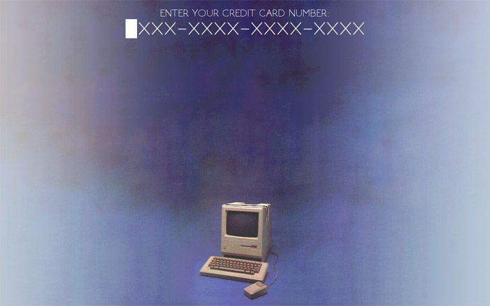
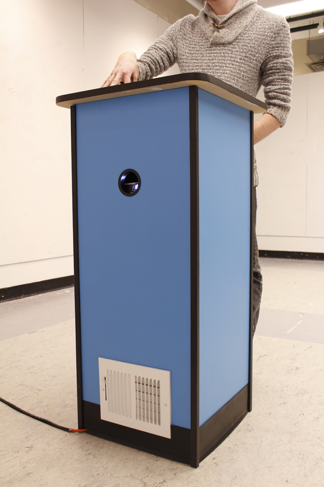
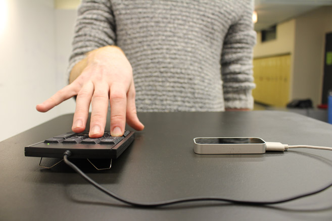
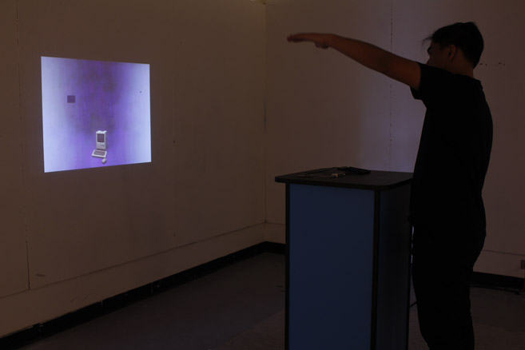

Trust Me
Trust Me is a new media installation. Trust Me was installed at the 2015 SAIC Art Bash where it won the Barbara Zenner Scholarship for Outstanding New Artist in Film, Video, New Media, and Animation.
The code for the project can be found here.



